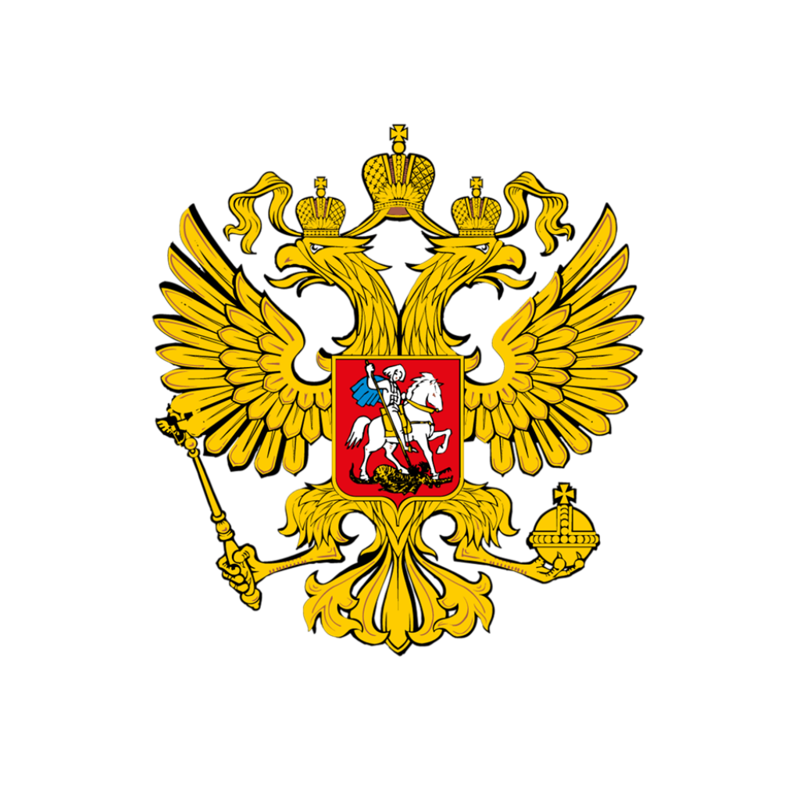
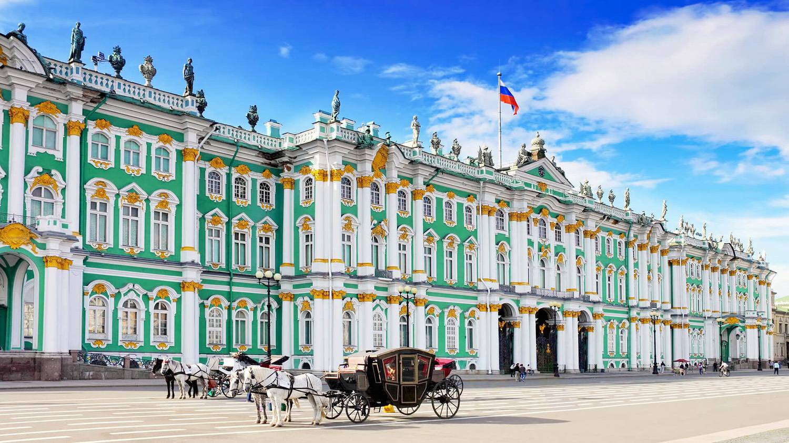

Россия
-

- 
Краткая информация
-
Место: 1 (ТОП-10)
-
Площадь: 17 098 246 км²
-
Население: 146 748 590 чел. (2020 г.)
-
Столица: Москва (с 1918 г.)
-
Язык: Русский
-
Валюта: Российский рубль, ₽ RUB
-
Крупнейшие города: Москва, Санкт-Петербург, Новосибирск, Екатеринбург, Казань, Нижний Новгород, Челябинск, Самара, Омск, Ростов-на-Дону, Уфа, Красноярск, Воронеж, Пермь, Волгоград, Краснодар
Георафическое положение и границы
-

Россия
Россия расположена полностью в Северном полушарии, бо́льшая часть территории России располагается в Восточном полушарии, лишь восточная часть Чукотского автономного округа располагается в Западном полушарии. Омывается водами Тихого и Северного Ледовитого океанов, а также Балтийским, Чёрным, Азовским морями Атлантического океана, обладая самой протяжённой береговой линией в мире (37 653 км). Россия расположена на севере материка Евразия, занимая бо́льшую часть Восточной Европы и весь север Азии. Уральские горы и Кумо-Манычская впадина разделяют Россию на европейскую (23 %) и азиатскую (77 %) части. Даже в Европе и Азии отдельно взятые европейская и азиатская части России являются крупнейшим по территории среди других государств.
В составе Российской Федерации находятся 85 субъектов, 46 из которых именуются областями, 22 — республиками, 9 — краями, 3 — городами федерального значения, 4 — автономными округами и 1 — автономной областью. Также с 2022 года в состав Рф входят Донецкая Народная Республика, Луганская Народная Республика, Херсонская и Запорожская область.
-
Округа субъектов Российской Федерации
-

Страны, граничащие с Россией
Россия граничит с 18 странами (самый большой показатель в мире), включая две частично признанные, из них по суше со следующими государствами: Норвегией, Финляндией, Эстонией, Латвией, Литвой, Польшей, Белоруссией, Украиной, Абхазией, Грузией, Южной Осетией, Азербайджаном, Казахстаном, КНР, КНДР, Монголией, по морю с Японией и США.
Протяженность страны в поясах
В России 11 часовых зон. Со 2-го номера по 12-й по международной нумерации. Отсчет начинается с Калининграда, самой западной точки страны (+2:00). Затем идёт Москва (+3:00). В самом восточном часовом поясе разница с мировым временем составляет двенадцать часов.
Выделяют:
- Калининградское время;
- Московское;
- Самарское;
- Екатеринбургское;
- Омское;
- Красноярское;
- Иркутское;
- Якутское;
- Владивостокское;
- Магаданское;
- Камчатское.
Московское время является точкой отсчета для определения местного времени в любом уголке страны. Разница считается по количеству полных часов, секунды и минуты остаются одинаковыми во всех часовых поясах.
-
Часовые пояса Российской Федерации
-
Часовые пояса Российской Федерации
Климат
Общая характеристика климата в России
Положение России в северной части Евразии (территория страны в основном лежит севернее 50° с. ш.) обусловило её размещение в арктическом, субарктическом, умеренном и частично субтропическом климатических поясах. Каждый из них имеет свои показатели температуры и нормы осадков. С востока на запад наблюдается переход муссонного климата в континентальный. Центральная часть характеризуется отчетливым разграничением времен года. На юге отметка термометра зимой редко опускается ниже 0˚C. Протяженность России с севера на юг составляет 4 тысячи километров, а с запада на восток — более 10 тысяч. Преобладающая часть территории расположена в умеренном поясе. Разнообразие климата также зависит от особенностей рельефа, количества солнечного излучения, а также от морей и океанов, омывающих Россию.
На огромной территории страны располагаются горные цепи, равнины и различные природные зоны: с севера на юг последовательно сменяются зона арктических пустынь, тундры, лесотундры, таёжных лесов, смешанных лесов, лесостепей, степей, полупустынь. С продвижением на восток климат становится всё более континентальным, количество природных зон в одном широтном интервале значительно сокращается.
Средние температуры января, по разным регионам, колеблются от +6 до - 50°C, июля от 1 до 25°C; осадков от 150 до 2000 мм в год. Вечная мерзлота (районы севера европейской части, Сибири и Дальнего Востока) занимает 65 % территории России.
-
Климатические пояса и области
-
Климатические пояса и области
Климатические пояса России
Арктический пояс
К нему относится побережье Северного Ледовитого Океана. Зимой преобладает сильный мороз, средняя январская температура превышает -30˚C. В западной части немного теплее благодаря воздуху с Атлантики. Зимой наступает полярная ночь.
Солнце светит летом, но из-за небольшого угла падения солнечных лучей и отражающих свойств снега тепло не задерживается у поверхности. Много солнечной энергии уходит на таяние снега и льда, поэтому температурный режим летнего периода приближается к нулю. Арктический пояс характеризуется небольшим количеством осадков, основная масса которых выпадает в виде снега.
Субарктический пояс
К нему относятся территории Русской и Западно-Сибирской равнины, расположенные преимущественно зоне тундры и лесотундры. Значения зимних температур нарастают с запада на восток. Летние показатели в среднем составляет +10˚C, а у южных границ еще выше. Даже в теплое время года существует угроза заморозков. Осадков немного, основная доля приходится на дожди и мокрый снег. Благодаря этому в почве наблюдается переувлажнение.
Умеренный пояс
К нему относится большая часть территории России. Зимы снежные, солнечный свет отражается от поверхности, из-за чего воздух сильно выхолаживается. В летнее время количество света и тепла возрастает. В умеренном поясе наблюдается значительный контраст между холодной зимой и теплым летом. Выделяют четыре основных типа климата:
- Умеренно континентальный приходится на западную часть страны. Зимы не особо холодные благодаря атлантическому воздуху, часто случаются оттепели. Средняя летняя температура составляет +24˚C. Влияние циклонов обуславливает значительное количество осадков в летний период.
- Континентальный климат влияет на территорию Западной Сибири. На протяжении года в эту зону проникает как арктический, так и тропический воздух. Зимы холодные и сухие, лето жаркое. Влияние циклонов ослабевает, поэтому осадков немного.
- Резко континентальный климат господствует в Средней Сибири. На всей территории очень холодные малоснежные зимы. Зимние температуры могут достигать -40˚C. Летом воздух прогревается до +25˚C. Осадков мало, они выпадают в виде дождя.
- Муссонный тип климата преобладает в восточной части пояса. Зимой здесь господствует континентальный воздух, а летом — морской. Зима малоснежная и холодная. Январские показатели составляют -30˚C. Лето теплое, но влажное, часто идут ливни. Средняя июльская температура превышает +20˚C.
Субтропический пояс
К нему относят небольшую область Черноморского побережья. Горы Кавказа не пропускают воздушный поток с востока, поэтому зимой в русских субтропиках тепло. Лето жаркое и затяжное. Снег и дождь выпадают круглый год, нет засушливых периодов. В субтропиках РФ выделяют лишь одну область — Причерноморскую.
Природа России
Для нашей страны характерно большое число природных зон (арктические пустыни, тундра, тайга и т.д.), что дает широкий спектр климатических условий и порождает разнообразие флоры и фауны. В одно и то же время температура в разных местах может существенно различаться: когда зимой в Сочи будет +15°C, в Якутии морозы могут доходить до –50°C.
В России насчитывается до 120 тысяч рек. Самая многоводная — Енисей, к крупным относятся Волга, Кама, Амур, Лена, Иртыш и Обь. Крупнейшие озера — Байкал (глубочайшее в мире — 1642 м, в нем сосредоточен самый большой запас пресной воды на планете), Онежское, Ладожское и Каспийское море.
-
Река Енисей
-
Река Волга
-
Озеро Байкал
Горы России
Самые высокие в стране — Кавказские горы. Они же и наиболее известные: все потому, что наш юг — одно из популярнейших направлений у отдыхающих. Летом это купания в море и трекинговые маршруты, зимой — катания на горнолыжных курортах. Именно на Кавказе находится высочайшая точка России — гора Эльбрус.
-

Кавказские горы
-

Рельеф Кавказских гор
-
Эльбрус
-
Красота Эльбруса
Самую большую площадь занимают Южно-Сибирские горы, они протянулись сразу через несколько регионов Сибири и Дальнего Востока: Алтай, Кемеровскую и Иркутскую области, Тыву, Хакасию, Красноярский и Забайкальский края, Бурятию.
В их состав входят Алтайские горы, изрезанные реками и усыпанные альпийскими лугами. Они обладают какой-то магической притягательностью. Здесь художник и путешественник Николай Рерих искал ворота в Шамбалу. Шаманы верили в их неземную силу, а самая известная здесь вершина Белуха считалась у них священной.
-
Гора Белуха
Красотой пейзажей покоряют Саяны: места, где тайга переходит в тундру, где текут сибирские реки и падают бурные водопады, среди которых самый мощный в стране находится на плато Путорана.
«Каменным поясом земли Русской» называют Уральские горы. Горная цепь протянулась на 2500 километров: от Северного Ледовитого океана до пустыни в Казахстане. Уральские горы — это пять географических зон: Полярный, Приполярный, Северный, Средний и Южный Урал. Хребет пролегает через девять регионов России: Архангельскую область, республику Коми, Ямало-Ненецкий автономный округ, Ханты-Мансийский автономный округ, Пермский край, Свердловскую, Челябинскую и Оренбургскую области, Башкортостан. Уральские горы условно разделяют две части света. Об этом напоминают многочисленные обелиски и памятные знаки, гласящие, что здесь заканчивается Европа и начинается Азия.
-

Гора Манарага (Республика Коми)
-

Горы Приполярного Урала
Краем гор и вулканов считается самый отдаленный регион — Камчатка. Это зона сейсмической активности, здесь возвышенности образуются даже в наши дни из-за землетрясений, действующих вулканов и гейзеров.
Увидеть горы России приезжают и иностранцы. Ведь в нашей стране много заповедников, и прелесть в том, что остались природные уголки, действительно нетронутые цивилизацией.
Характерные особенности
Неравномерность нагрева земной поверхности от южных регионов к северным и разное количество выпадаемых осадков — это основные причины образования отдельных природных зон. В этом случае границы биокомплексов проходят по определенным широтам. Чем ближе юг, тем теплее климат и разнообразнее животный и растительный мир. В России различают следующие природные зоны:
- Арктические пустыни — это северные острова и часть полуострова Таймыр. Здесь очень суровый климат, долгая и морозная зима. В таких условиях выпавший снег не везде успевает таять, на многих островах образуются ледники. Растительность здесь очень скудная, зато водятся крупные животные (например, моржи), находящие себе корм в океане.
-

Арктические пустыни
- Тундра — основная природная зона, расположенная выше полярного круга вдоль побережья морей Северного ледовитого океана. Занимает около 1/8 площади России. Лето здесь короткое, температура местами может достигать +10°C. Для тундры характерна многолетняя мерзлота, которая не дает влаге глубоко просачиваться в почву, из-за чего образуются многочисленные озера. Как и на арктических территориях, растительности тоже мало, нет и разнообразия животных. При переходе к следующей зоне возникает узкая полоса лесотундры.
- Тайга — зона хвойных лесов, проходящая по всей России и заканчивающаяся у Тихого океана. Наибольшей ширины она достигает в Сибири. При движении от тайги на юг формируется переходная зона смешанных лесов.
-

Тундра (Чукотский полуостров)
-

Восточно-Сибирская тайга
- Широколиственный лес — это большая часть Русской равнины и юг Дальнего Востока. Растительный и животный мир очень разнообразный. Переходная зона лесостепи практически не выражена в природе, потому что эта территория часто занята под хозяйственную деятельность человека.
- Степи — равнина, поросшая травянистой растительностью. Сюда входит и полоса плодородных черноземов на севере от Черного моря в Краснодарском крае. Собранного там урожая достаточно, чтобы прокормить половину населения нашей страны. Еще одна полоса степей — в долине Оби и Забайкалье. Климат — умерено континентальный, отличается большой протяженностью безморозного периода и небольшим количеством осадков. Часто здесь дуют суховеи (горячие ветры), переходящие в пыльные бури. В зависимости от конкретного географического расположения различают несколько подвидов степей — горные, луговые и пр. При дальнейшем движении на юг возникает переходная зона полупустыни.
-
Широколиственный лес
-
Ставропольские степи
- Пустыни — небольшие по площади засушливые территории. Их основное расположение — в низовьях Волги, около Каспийского моря и на границе с Казахстаном. Климат на этих территориях резко континентальный, зима неустойчивая. Из-за интенсивного испарения в верхних слоях почвы накапливаются соли, что приводит к образованию солончаков.
- Субтропические леса — самые южные территории нашей страны (черноморское побережье Кавказа, Крым). Из-за незначительной представленности их часто не выделяют в отдельную зону.
-
Пустыня в Астраханской области
-

Самурский лес в Дагестане
Флора и фауна
Растительность
В России насчитывается около 25000 видов растений. Самая богатая флора (более 6000 видов) находится на Кавказе и на Дальнем Востоке (до 2000 видов), меньше всего растительности встречается на арктических островах.
Тундра и лесотундра расположены в зоне вечной мерзлоты, не дающей развиваться крупным представителям флоры, здесь могут выжить только лишайники и мхи, карликовые кустарники и деревья.
Леса занимают почти половину территории страны, при этом большая их часть расположена в азиатской половине России. Тайга простирается от Карелии до Урала, далее тянется через всю Сибирь, включая Камчатку и Сахалин. В сибирских лесах растут в основном хвойные породы (сосна, кедр, ель, лиственница), разбавленные дубом, осиной и берёзой. На Дальнем Востоке находятся смешанные леса, похожие на те, что занимают среднюю полосу России. Ближе к югу растут дуб, ясень, граб и клён. В тёплых регионах России преобладают районы, занятые лесостепью (Средняя Волга, Южный Урал и Западносибирская равнина) и степью с густой растительностью и небольшим количеством деревьев (Южная Волга и юг Западной Сибири).
-
Берёза
-
Кедр
-
Клён
Животный мир
Животный мир России богат и разнообразен: на Крайнем Севере и в районах тундры живут полярные лиса и заяц, белый медведь, тюлень, морж и северный олень, из птиц — куропатка, чайки, гагары и полярные совы. Сибирская тайга — пристанище марала, лося, бурого медведя, лисы, волка, зайца, рыси и соболя. Характерные представители пернатых местных лесов — тетерев, глухарь, сова, кедровка, клёст. Дальний Восток славится уссурийским тигром и леопардами, Камчатка — большим количеством бурых медведей и оленей.
В смешанных и лиственных лесах обитают норка, кабан, многочисленные змеи и птицы.
В степях живёт много грызунов: хомяки, суслики, сурки. Здесь водится антилопа, а хищники представлены татарской лисицей и степным хорьком. Самые заметные птицы — журавли, беркуты и орлы.
В районах Кавказа обитает несколько видов горных козлов, а также олени, косули, барсы, кабаны, медведи и дикобразы. Здесь можно встретить разнообразные виды рептилий и насекомых.
-
Журавль
-
Косуля
-

Степной хорёк
Природные ресурсы России
Россия занимает особое место среди индустриальных стран, так как ее природно-ресурсный потенциал составляет 35% от мирового запаса.
Главные особенности природно-ресурсного потенциала России:
- значительный объем и большое разнообразие;
- неравномерное размещение по территории страны;
- недостаточная изученность (особенно на территории Арктики и Дальнего Востока);
- истощение запасов в хорошо освоенных районах;
- недостаточное развитие инфраструктуры и других условий для добычи ресурсов в слабообжитых районах и районах с суровым климатом.
Водные ресурсы
По запасам пресных вод Россия занимает первое место в мире. В нашей стране сосредоточено более 20% мирового запаса водных ресурсов. Более наглядно можно выразить в цифрах:
- рек в России — 2,5 млн, из них 127 тысяч используются активно;
- озер — более 2 млн.;
- водохранилищ — около 30 тысяч, среди которых 2 тысячи с объемом более 1 млн. кубометров;
- подземных вод — 5,1 тыс. месторождений.
Пресная вода
Большинство водоемов расположено в Сибири, на Дальнем Востоке и в северном регионе европейской части страны. Следует учитывать, что значительная часть территории России (11 млн. кв.км) скрыта под вечной мерзлотой. Толщина ледяного покрова варьируется от нескольких сантиметров до нескольких десятков метров — это огромнейший запас пресной воды.
Озеро Байкал – объект всемирного наследия ЮНЕСКО – является самым глубоким озером в мире. Объем воды в этом озере составляет около 23 000 м³, а это 20% незамерзшей пресной воды мира и 90% запасов пресной воды России.
Ладожское и Онежское озеро – самые большие пресноводные озёра в Европе, объемом 838 000 м³ и 285 000 м³ соответственно.
-
Онежское озеро
-

Ладожское озеро
Солёная вода
Эльтон – соленое озеро в Волгоградской области, недалеко от границы с Казахстаном. Имеет округлую форму, а его площадь составляет 152 км². Эльтон является самым большим минеральным озером Европы (по площади).
Баскунчак – это соленое озеро, расположенное в Астраханской области имеет площадь около 106 км². Его соленость составляет 300%. Ежегодно из этого озера добывают от 1,5 до 5 млн тонн соли. Баскунчак обладает многими лечебными свойствами, поэтому люди сюда приезжают для лечения и профилактики различных заболеваний.
Загрязнение воды
Ситуация в мире развивается таким образом, что в скором будущем вода может стоить ненамного дешевле нефти. Поэтому так важно сохранять водные ресурсы в чистоте. К сожалению, экологическая обстановка на большинстве российских рек — неблагоприятная. Лишь 40% водоемов России отвечают санитарным нормам. Остальные страдают от стоков канализации и промышленных отходов.
Значительны гидроэнергетические ресурсы России. Большая часть из них сосредоточена в Сибири и на дальнем Востоке. В год наши электростанции способны вырабатывать до 1600 млрд. кВт.
Земельные ресурсы
Земельный фонд России составляет 1709 млн. га, из них более 400 млн. га выделены для сельского хозяйства. Обеспеченность населения пахотными землями в России — 0,8 га (для сравнения: в Канаде — 1,6 га, в США — 0,5 га, в Китае — 0,07 га). Российские показатели — средние, но такого количества земли вполне достаточно, чтобы обеспечить население продовольствием, а промышленность — сырьем.
Большая часть пахотных земель расположена на европейской части, а также на юге Сибири и Урала, пастбища сосредоточены на юго-востоке Русской равнины, в предгорьях Кавказа и на юге Западно-Сибирской равнины. В тундре распространены оленьи пастбища.
Лесные ресурсы
Леса занимают 45% территории России, а общая площадь лесного фонда составляет 1179 млн. га. Основные лесные массивы произрастают в Сибири, на Дальнем Востоке и на северной территории европейской части страны.
В лесах преобладают хвойные породы (ели, сосны). Они занимают 70% территории лесов и составляют 77% общего запаса древесины.
Но по уровню использования лесных богатств наша страна отстает от многих развитых стран. В основном лес идет на экспорт, так как сказывается нехватка перерабатывающих предприятий. Очень много леса теряется при транспортировке, еще больше гибнет в лесных пожарах, которые вспыхивают практически ежегодно. Более того, лесонасаждения не компенсируют вырубку леса, что приводит к исчезновению целых лесных массивов. Особенно неблагоприятная обстановка складывается вокруг Байкала, где уничтожено несколько сотен тысяч гектаров лесных насаждений.
-

Лесные ресурсы
-

Лесные ресурсы
Минеральные ресурсы
В России разведаны месторождения практически всех видов полезных ископаемых. По добыче некоторых из них страна занимает лидирующие положения. Так, в России сосредоточено около 10% мирового запаса нефти, 30% запасов газа, 16% запасов угля, 32% железа, 16% калийных солей, 7% цинка. Начавшееся интенсивное освоение арктического шельфа способно значительно увеличить эти цифры. Всего на территории РФ разведано более 20 тысяч месторождений полезных ископаемых, но только треть из них введены в промышленное состояние.
Залежи полезных ископаемых распределены по территории неравномерно. Более 70% запасов расположены в Восточной Сибири, на Урале и в Арктике. Нефть найдена в 37 субъектах РФ, 7 российских угольных бассейнов входят в десятку крупнейших в мире. На Восточно-Европейской равнине сосредоточены запасы осадочных пород, Средне-Русская и Приволжская возвышенности славятся богатыми залежами известняков, строительного песка, мела и гипса. В Подмосковье разведаны месторождения бурого угля и фосфоритов, а на Кавказе развивается добыча цветных металлов.
Альтернативные источники энергии
В последнее время в России возрос интерес к освоению возобновляемых источников энергии (солнца, ветра, геотермальных источников). Пока использование этих источников не ведется в промышленном масштабе, но уже работают несколько десятков электростанций, которые получают энергию альтернативным способом. Во несколько примеров:
- Вехнемутновская, Паужетская и Мутновская геотермальные электростанции на Камчатке;
- Менделеевская геоТЭС на Сахалине;
- ветроэнергетические комплексы на Чукотке, а также в Ленинградской и Калининградской областях;
- солнечные водонагревательные установки в Краснодарском крае, в Башкирии и Бурятии.
Запасы возобновляемых энергоресурсов в России просто огромны, но пока нет законов, регулирующих эту область промышленности и стимулирующих ее развитие. Равно как нет и промышленной структуры, пригодной для переработки этих ресурсов.
Отдых в России
Каждый желающий может выбрать в России наиболее подходящий для себя вариант отдыха.
- Экскурсионный туризм предлагает множество маршрутов и удовлетворит стремление к познанию России, её истории, быта, культуры и природы.
- Пляжный отдых ждёт туристов на побережьях Чёрного моря (от Анапы до Туапсе и в Сочи), в Приморском крае, на курортах Краснодарского края.
- Оздоровительный туризм развит практически во всех регионах страны. Курорты Кавказских Минеральных вод (Ессентуки, Кисловодск, Пятигорск, Железноводск) обладают уникальными целебными источниками, восстанавливающими здоровье. Алтайский курорт Белокуриха знаменит лечебным микроклиматом, чистой экологией и прекрасной санаторной базой. Оздоровиться помогут бальнеологические курорты Анапы, Аршана (Бурятия), Дарасун (Читинская область), Кульдур (Хабаровский край), Начика (Камчатка), Шмаковка (Приморский край). Отличные грязевые и климатические курорты ждут отдыхающих в Ейске (Краснодарский край), во Владивостокской курортной зоне, в Геленджике, в Калининграде, в Паратунке (Камчатка), в Сочи.
- Активный и экстремальный отдых в России популярен благодаря уникальному природному разнообразию. Любителей зимних видов спорта ждут зимние курорты Сочи, Приэльбрусья, Урала, Алтая, Шерегеша (Кемеровская область). Водный туризм развит на Алтае, Урале, Валдайской возвышенности, Кольском полуострове, в Карелии. Поклонников альпинизма ждут в любом регионе страны, где есть горные системы — на Кавказе, Алтае, Урале, в Красноярском крае и в Приамурье.
- Паломнический туризм даёт возможность верующим людям прикоснуться к православным святыням России, посетить места, связанные со знаменательными историческими событиями: Свято-Троице-Сергиеву лавру, Оптину пустынь, Валаам, Дивеево и другие, не менее важные, монастыри.
- Автомобильный туризм даст путешественнику прекрасную возможность познакомиться с российской провинцией, с её природным многообразием, посетить любые приглянувшиеся места.
Места, которые стоит посетить в России
Рускеала, Карелия
Рускеала — это село с уникальной природой и славной историей, вблизи которого расположен одноимённый горный парк. Он включает в себя Мраморный каньон и Рускеальский провал. Каньон окружён отвесными скалами, гротами и штольнями. Он заполнен чистыми грунтовыми водами, и поэтому абсолютно прозрачен. А Рускеальский провал уникален тем, что в его дальних частях никогда не тает лёд. В парке можно прокатиться по каньону на лодке, прыгнуть с его обрыва или поплавать по заброшенным шахтам с аквалангом.
-
Рускеала
Петергоф, Санкт-Петербург
Петергоф — это дворцово-парковый ансамбль на южном берегу Финского залива. Наряду с другими архитектурными памятниками является визитной карточкой Санкт-Петербурга и частью Всемирного наследия ЮНЕСКО. Облик загородной императорской резиденции формировался на протяжении XVIII-XIX веков, сильно пострадал во время Великой Отечественной войны, но полностью восстановлен и облагорожен. Лучшее время для посещения Петергофа — конец весны и лето, когда работают фонтаны. Их там 147 — это одна из крупнейших фонтанных систем в мире.
-
Петергоф
Эрмитаж, Санкт-Петербург
Музей с одной из самых больших коллекций искусства в мире сам является одним из его главных экспонатов. Главное здание музея – Зимний дворец – это бывшая резиденция русских монархов.
-

Эрмитаж
Храм Василия Блаженного, Москва
Собор Василия Блаженного – православный храм в центре Москвы, полное название которого звучит как Собор Покрова Пресвятой Богородицы, что на Рву. Памятник русской архитектуры XVI в. находится на Красной площади и включен в списки Всемирного наследия ЮНЕСКО. Собор представляет собой комплекс из одиннадцати церквей на едином подклете, среди которых центральная освящена в честь Покрова Богородицы.
-

Храм Василия Блаженного
Кремль Великого Новгорода
Новгородский кремль, известный также как детинец, красуется в историческом центре Великого Новгорода , на левом берегу реки Волхов, примерно в 3 км от ее истока из озера Ильмень. Этот комплекс сооружений, заложенный в XI столетии, – всемирно известный объект международного туризма, включенный в списки охраняемого наследия ЮНЕСКО. Путешественники едут сюда, чтобы погрузиться в атмосферу Древней Руси, взойти на могучие стены и башни, посетить прекрасные храмы, взглянуть на удивительные произведения искусства и артефакты, хранящиеся в Новгородском музее-заповеднике.
-

Новгородский кремль
Мамаев Курган, Волгоград
Южный город Волгоград видел самую кровавую битву в истории, когда было убито около 1,5 млн человек. В память этому появился этот огромный памятник «Родины-матери» на вершине холма.
-

Мамаев Курган
Байкал, Бурятия/Иркутская область
Средь сибирских сопок и вековых лесов, между Иркутском и Улан-Удэ лежит самое известное российское озеро. Байкал уникален — это самое глубокое на планете и самое чистое в стране озеро. Здесь вы сможете насладиться огромным количеством эндемиков и головокружительными пейзажами. Наиболее благоприятное время для посещения Байкала — с мая по октябрь. Основные курорты: Листвянка («ворота Байкала»), Слюдянка, Ольхон (самый известный байкальский остров — его сердце), Большие Коты и Бухта Песчаная («Байкальская ривьера»). В каждом из этих местечек вас ждёт множество развлечений: от купания и дайвинга до рыбалки и встреч с шаманами.
-

Озеро Байкал
Вулкан Тятя, Курильские острова
Тятя (в переводе с японского — «отец-гора») — это действующий вулкан на острове Кунашир. Является частью Курильского заповедника. Тятя считается одним из самых красивых вулканов, после Фудзиямы и Везувия. И он один из самых активных на Курилах. У него несколько удивительных кратеров.Его стоит посетить, чтобы ощутить мощь природы. Ещё в Курильском заповеднике можно насладиться красотой редких растений и животных, а также термальными источниками.
-

Вулкан Тятя
-

Вулкан Тятя
Казанский кремль
Казанский кремль – главная городская достопримечательность города. Огромный комплекс включает в себя оборонительные сооружения, башню Сююмбике, Губернаторский дворец, Благовещенский собор, Спасо-Преображенский монастырь, Юнкерское училище, Пушечный двор и Мечеть Кул-Шариф. На территории кремля действует музей истории, музей ислама, и филиал Эрмитажа.
-

Казанский кремль
Кухня
Для русской кухни не характерны изыски и замысловатость, национальные блюда простые в исполнении, сытные и вкусные. Наиболее известные представители русской гастрономии — борщ, уха, блины, пироги со всевозможными начинками, пельмени.
-

Борщ
-
Уха
Суп — обязательное блюдо русского обеда. В России супы готовят на основе мясных, рыбных или грибных бульонов с последующим добавлением овощей, приправ и зелени. В жару россияне с удовольствием едят окрошку — смесь мелко нарезанных овощей, варёных яиц, мяса и зелени, заправленную квасом.
В России традиционно едят много мяса, что связано с прохладным климатом. Отдают должное россияне и рыбе, ловля которой является одним из популярных хобби у мужчин.
В регионах, богатых лесами, летом и осенью многие жители выезжают на сбор грибов. Очень вкусны белые грибы, подберёзовики, опята, лисички, маслята, грузди. Грибы россияне жарят, тушат в сметане, маринуют, солят и засушивают на зиму.
-
Блюда с грибами
-

Блюда с грибами
Русская кухня богата блюдами из овощей. Капуста, свёкла, картофель, репа, морковь, тыква и кабачки варятся, тушатся, добавляются в супы и во вторые блюда.
Популярны в стране различные каши, выступающие как самостоятельным блюдом, так и гарниром к мясу или овощам.
Некоторые блюда русской кухни — пасхальный кулич, блины, поминальная кутья, — имеют религиозное и ритуальное значение и готовятся во время определённых праздников или ритуалов.
- https://ru.wikipedia.org/wiki/Россия#Географическое_положение
- https://natworld.info/nauki-o-prirode/prirodnye-resursy-na-territorii-rossii
- https://lands.fandom.com/ru/wiki/Россия
- https://wikiway.com/russia/#gl8
- https://сезоны-года.рф/природные%20ресурсы%20России.html
- https://wiki.fenix.help/geografiya/chasovyye-poyasa-rossii
- https://natworld.info/nauki-o-prirode/klimat-rossii-osobennosti-tipy-oblasti-zony-i-regiony
- https://wiki.fenix.help/geografiya/priroda-rossii
- https://www.kp.ru/russia/gory-rossii/
- https://www.kp.ru/russia/gory-rossii/uralskie/
- https://lifehacker-ru.turbopages.org/lifehacker.ru/s/krasivye-mesta-v-rossii/
- https://www.kp.ru/russia/idei-dlya-otpuska/30-samyh-krasivyh-gorodov-rossii/
- https://wikiway.com/russia/velikiy-novgorod/novgorodskiy-kreml/
- https://travelask.ru/articles/kavkazskie-gory-gory-udivitelnoy-krasoty